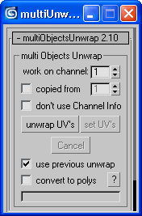

|
[toolbox]
multi
Objects Unwrap < download
> version 2.10
This script allows to unwrap* several objects at the same time. (*)edit UVW coordinates  Usage: 1- Select the objects you want to unwrap and click on 'unwrap UV's' : edit them. 2- When it's done click 'set UV's' ( don't forget ! ). Known limitations: - Only polys and meshes are supported (the other objects are converted to Poly or Mesh). - instance or reference objects could not work at this time. (untested) Options: - work on channel : the channel UV on which the script operates. - copied from : copy this channel as starting point (optional). - don't use Channel Info : don't use the Channel Info interface for the copy. - use previous unwrap: reuse the last 'Unwrap' modifier when It's possible. - convert to polys: converts the objects to editable poly. No undo available. Version history: 2.10 - The Internal routines are completely rewritten. The reliability is increased in the special cases like the combination of several modifiers. It is a major update. 2.03 to 2.06 - versions for the beta test 1.31b - a new mode for welding mapVertices is added: 'break + clusters weld'. That avoid to weld mapVertices beetween clusters. That become the default mode. 1.30b- Bugs were fixed when you use an another channel than the channel 1. 1.26b - A Cancel button is added. Installation of the macroscript: 1. Click the MAXScript item in the Main Menu, select Run Script... 2. Locate and select the script and press Open 3. Go to Customize > Customize User Interface and select the desired Tab (Keyboard, Toolbars, Quad or menu) 4. Locate the category 'UVWtoolBox' under group 'Main UI' 5. Search in the category for the name 'multiObjectsUnwrap' 6. Drag the script to the toolbar, Menu, QuadMenu or assign to a Shortcut If you encounter bugs or problems that I am not aware of, please send me yours comments. Any suggestions are welcome. menu | version française |